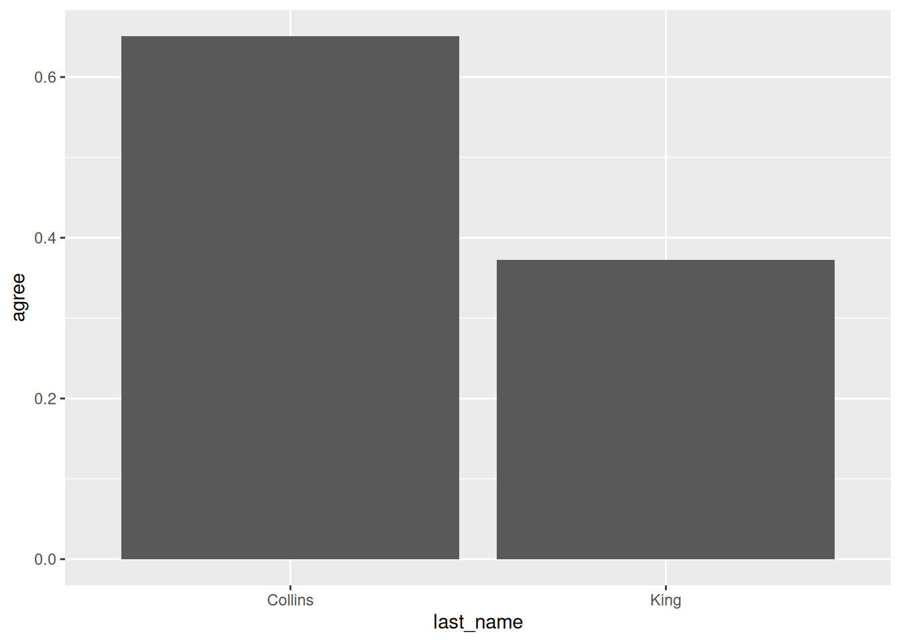
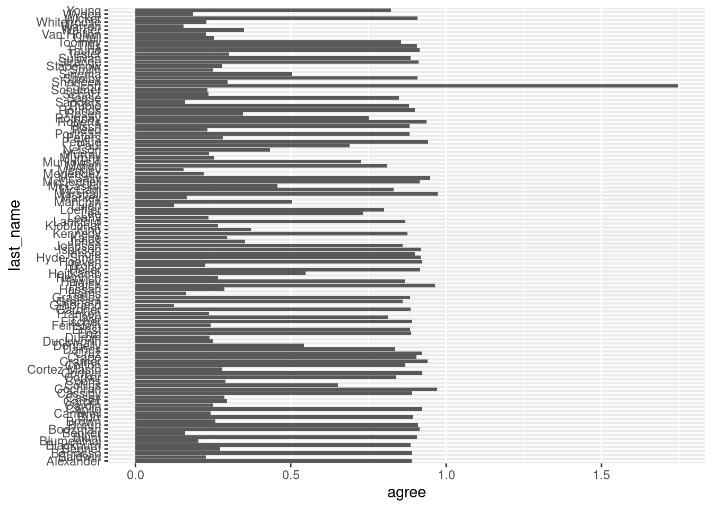
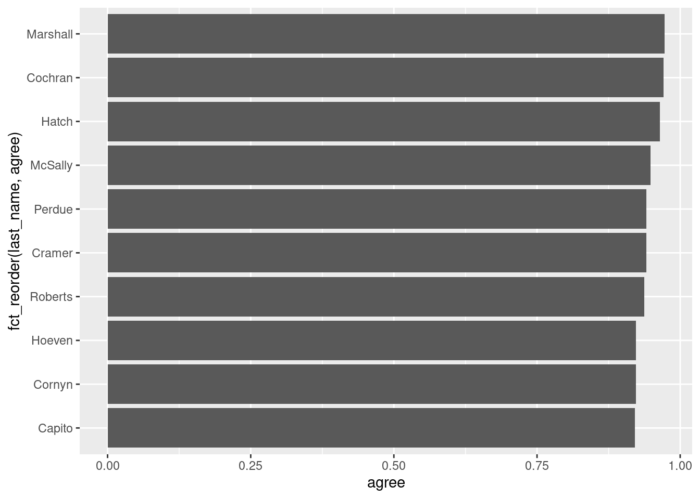
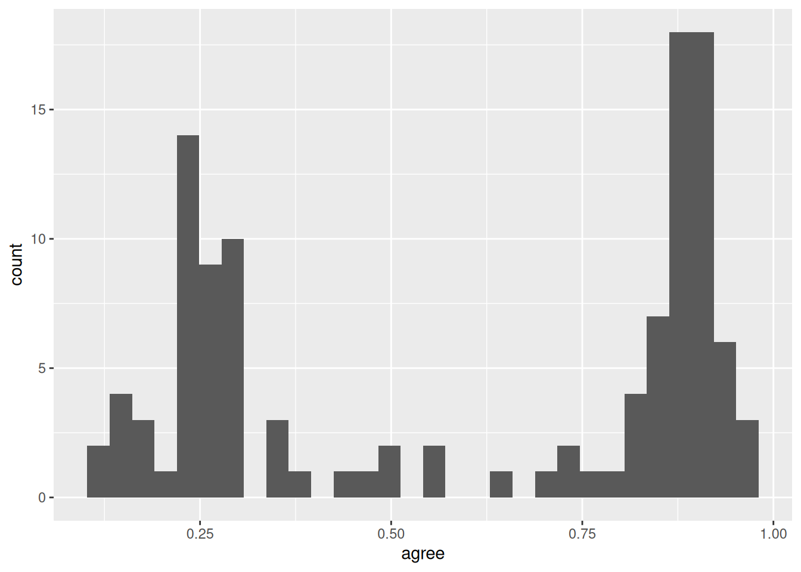
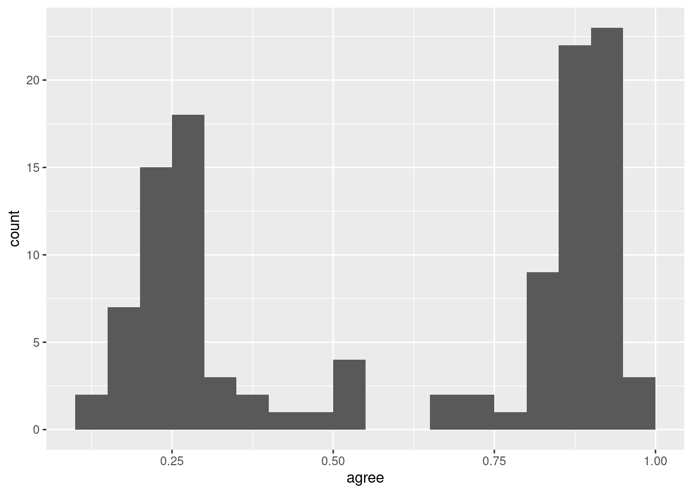
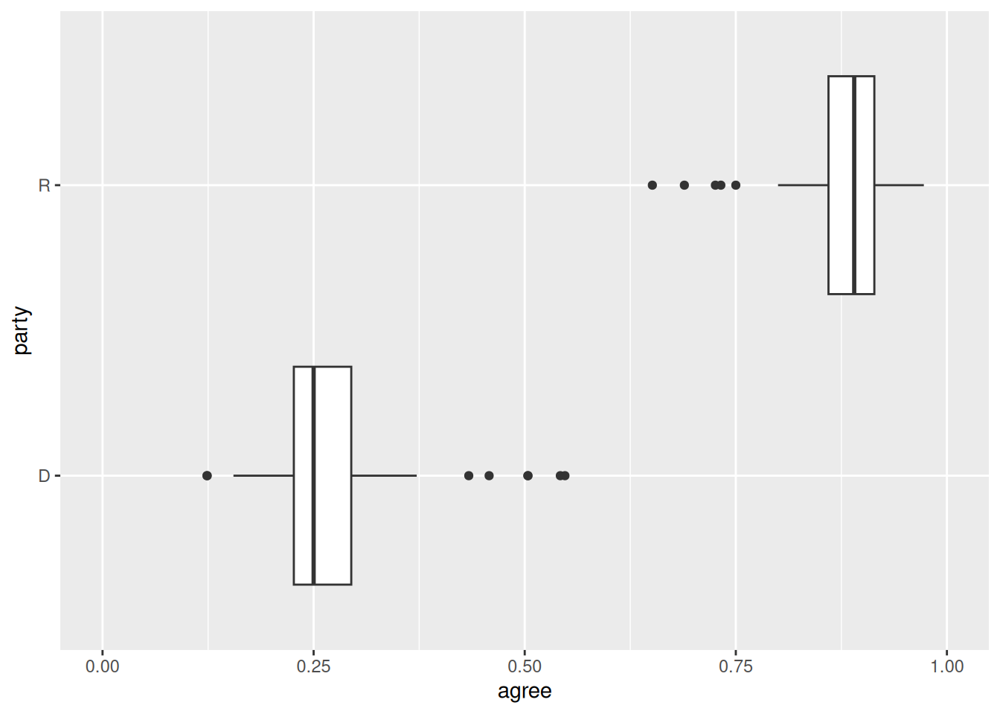
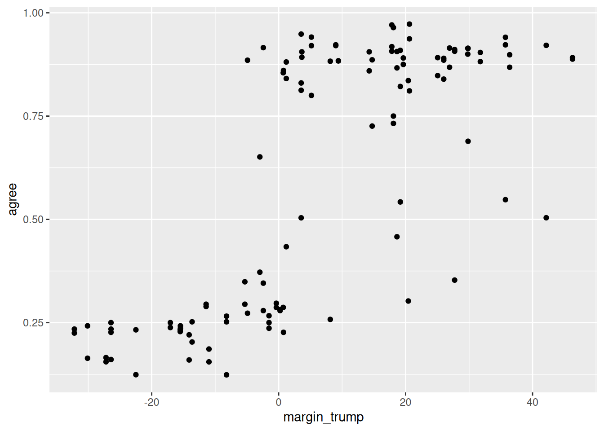
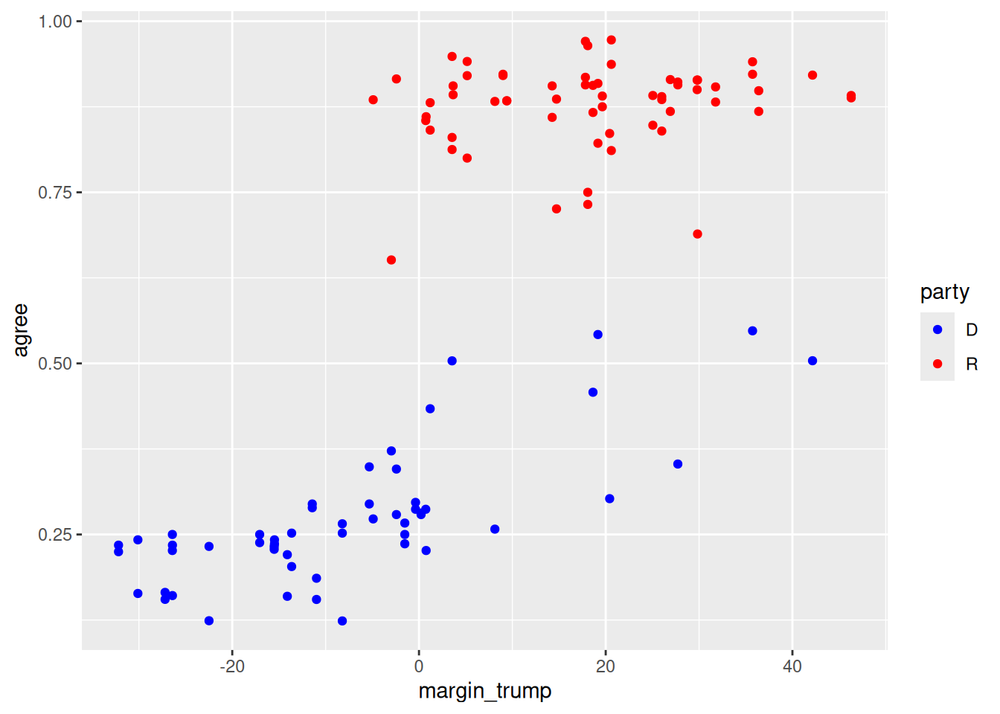
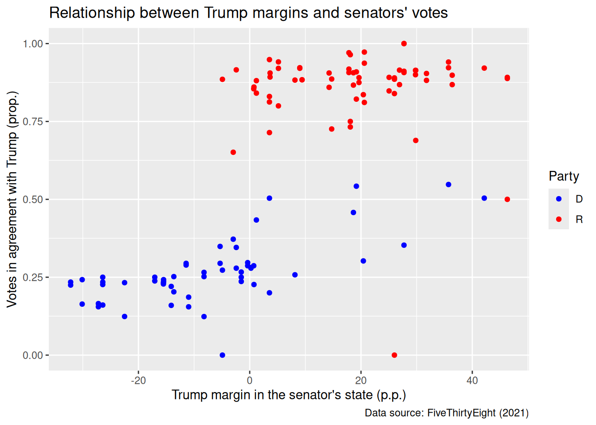

The tidyverse is a suite of packages that streamline data analysis in R. After installing the tidyverse with install.packages("tidyverse") (see the previous module), you can load it with:
library(tidyverse)
── Attaching core tidyverse packages ──────────────────────── tidyverse 2.0.0 ──
✔ dplyr 1.1.4 ✔ readr 2.1.5
✔ forcats 1.0.0 ✔ stringr 1.5.1
✔ ggplot2 3.5.1 ✔ tibble 3.2.1
✔ lubridate 1.9.3 ✔ tidyr 1.3.1
✔ purrr 1.0.2
── Conflicts ────────────────────────────────────────── tidyverse_conflicts() ──
✖ dplyr::filter() masks stats::filter()
✖ dplyr::lag() masks stats::lag()
ℹ Use the conflicted package (<http://conflicted.r-lib.org/>) to force all conflicts to become errors
Tip
Upon loading, the tidyverse prints a message like the one above. Notice that multiple packages (the constituent elements of the “suite”) are actually loaded. For instance, dplyr and tidyr help with data wrangling and transformation, while ggplot2 allows us to draw plots. In most cases, one just loads the tidyverse and forgets about these details, as the constituent packages work together nicely.
Throughout this module, we will use tidyverse functions to load, wrangle, and visualize real data.
2.1 Loading data
Throughout this module we will work with a dataset of senators during the Trump presidency, which was adapted from FiveThirtyEight (2021).
We have stored the dataset in .csv format under the data/ subfolder. Loading it into R is simple (notice that we need to assign it to an object):
Rows: 122 Columns: 8
── Column specification ────────────────────────────────────────────────────────
Delimiter: ","
chr (4): bioguide, last_name, state, party
dbl (4): num_votes, agree, agree_pred, margin_trump
ℹ Use `spec()` to retrieve the full column specification for this data.
ℹ Specify the column types or set `show_col_types = FALSE` to quiet this message.
trump_scores
# A tibble: 122 × 8
bioguide last_name state party num_votes agree agree_pred margin_trump
<chr> <chr> <chr> <chr> <dbl> <dbl> <dbl> <dbl>
1 A000360 Alexander TN R 118 0.890 0.856 26.0
2 B000575 Blunt MO R 128 0.906 0.787 18.6
3 B000944 Brown OH D 128 0.258 0.642 8.13
4 B001135 Burr NC R 121 0.893 0.560 3.66
5 B001230 Baldwin WI D 128 0.227 0.510 0.764
6 B001236 Boozman AR R 129 0.915 0.851 26.9
7 B001243 Blackburn TN R 131 0.885 0.889 26.0
8 B001261 Barrasso WY R 129 0.891 0.895 46.3
9 B001267 Bennet CO D 121 0.273 0.417 -4.91
10 B001277 Blumenthal CT D 128 0.203 0.294 -13.6
# ℹ 112 more rows
Let’s review the dataset’s columns:
bioguide: A unique ID for each politician, from the Congress Bioguide.
last_name
state
party
num_votes: Number of votes for which data was available.
agree: Proportion (0-1) of votes in which the senator voted in agreement with Trump.
agree_pred: Predicted proportion of vote agreement, calculated using Trump’s margin (see next variable).
margin_trump: Margin of victory (percentage points) of Trump in the senator’s state.
We can inspect our data by using the interface above. An alternative is to run the command View(trump_scores) or click on the object in RStudio’s environment panel (in the top-right section).
Do you have any questions about the data?
By the way, the tidyverse works amazingly with tidy data. If you can get your data to this format (and we will see ways to do this), your life will be much easier:
We often need to modify data to conduct our analyses, e.g., creating columns, filtering rows, etc. In the tidyverse, these operations are conducted with multiple verbs, which we will review now.
2.2.1 Selecting columns
We can select specific columns in our dataset with the select() function. All dplyr wrangling verbs take a data frame as their first argument—in this case, the columns we want to select are the other arguments.
select(trump_scores, last_name, party)
# A tibble: 122 × 2
last_name party
<chr> <chr>
1 Alexander R
2 Blunt R
3 Brown D
4 Burr R
5 Baldwin D
6 Boozman R
7 Blackburn R
8 Barrasso R
9 Bennet D
10 Blumenthal D
# ℹ 112 more rows
This is a good moment to talk about “pipes.” Notice how the code below produces the same output as the one above, but with a slightly different syntax. Pipes (|>) “kick” the object on the left of the pipe to the first argument of the function on the right. One can read pipes as “then,” so the code below can be read as “take trump_scores, then select the columns last_name and party.” Pipes are very useful to chain multiple operations, as we will see in a moment.
trump_scores |>select(last_name, party)
# A tibble: 122 × 2
last_name party
<chr> <chr>
1 Alexander R
2 Blunt R
3 Brown D
4 Burr R
5 Baldwin D
6 Boozman R
7 Blackburn R
8 Barrasso R
9 Bennet D
10 Blumenthal D
# ℹ 112 more rows
Tip
You can insert a pipe with the Cmd/Ctrl + Shift + M shortcut. If you have not changed the default RStudio settings, an “old” pipe (%>%) might appear. While most of the functionality is the same, the |> “new” pipes are more readable. You can change this RStudio option in Tools > Global Options > Code > Use native pipe operator. Make sure to check the other suggested settings in our Setup module!
Going back to selecting columns, you can select ranges:
trump_scores |>select(bioguide:party)
# A tibble: 122 × 4
bioguide last_name state party
<chr> <chr> <chr> <chr>
1 A000360 Alexander TN R
2 B000575 Blunt MO R
3 B000944 Brown OH D
4 B001135 Burr NC R
5 B001230 Baldwin WI D
6 B001236 Boozman AR R
7 B001243 Blackburn TN R
8 B001261 Barrasso WY R
9 B001267 Bennet CO D
10 B001277 Blumenthal CT D
# ℹ 112 more rows
You can also deselect columns using a minus sign:
trump_scores |>select(-last_name)
# A tibble: 122 × 7
bioguide state party num_votes agree agree_pred margin_trump
<chr> <chr> <chr> <dbl> <dbl> <dbl> <dbl>
1 A000360 TN R 118 0.890 0.856 26.0
2 B000575 MO R 128 0.906 0.787 18.6
3 B000944 OH D 128 0.258 0.642 8.13
4 B001135 NC R 121 0.893 0.560 3.66
5 B001230 WI D 128 0.227 0.510 0.764
6 B001236 AR R 129 0.915 0.851 26.9
7 B001243 TN R 131 0.885 0.889 26.0
8 B001261 WY R 129 0.891 0.895 46.3
9 B001267 CO D 121 0.273 0.417 -4.91
10 B001277 CT D 128 0.203 0.294 -13.6
# ℹ 112 more rows
Or everything(), which we usually use to reorder columns:
trump_scores |>select(last_name, everything())
# A tibble: 122 × 8
last_name bioguide state party num_votes agree agree_pred margin_trump
<chr> <chr> <chr> <chr> <dbl> <dbl> <dbl> <dbl>
1 Alexander A000360 TN R 118 0.890 0.856 26.0
2 Blunt B000575 MO R 128 0.906 0.787 18.6
3 Brown B000944 OH D 128 0.258 0.642 8.13
4 Burr B001135 NC R 121 0.893 0.560 3.66
5 Baldwin B001230 WI D 128 0.227 0.510 0.764
6 Boozman B001236 AR R 129 0.915 0.851 26.9
7 Blackburn B001243 TN R 131 0.885 0.889 26.0
8 Barrasso B001261 WY R 129 0.891 0.895 46.3
9 Bennet B001267 CO D 121 0.273 0.417 -4.91
10 Blumenthal B001277 CT D 128 0.203 0.294 -13.6
# ℹ 112 more rows
Tip
Notice that all these commands have not edited our existent objects—they have just printed the requested outputs to the screen. In order to modify objects, you need to use the assignment operator (<-). For example:
# A tibble: 122 × 8
bioguide last_name state party num_votes prop_agree prop_agree_pred
<chr> <chr> <chr> <chr> <dbl> <dbl> <dbl>
1 A000360 Alexander TN R 118 0.890 0.856
2 B000575 Blunt MO R 128 0.906 0.787
3 B000944 Brown OH D 128 0.258 0.642
4 B001135 Burr NC R 121 0.893 0.560
5 B001230 Baldwin WI D 128 0.227 0.510
6 B001236 Boozman AR R 129 0.915 0.851
7 B001243 Blackburn TN R 131 0.885 0.889
8 B001261 Barrasso WY R 129 0.891 0.895
9 B001267 Bennet CO D 121 0.273 0.417
10 B001277 Blumenthal CT D 128 0.203 0.294
# ℹ 112 more rows
# ℹ 1 more variable: margin_trump <dbl>
This is a good occasion to show how pipes allow us to chain operations. How do we read the following code out loud? (Remember that pipes are read as “then”).
It is common to want to create columns, based on existing ones. We can use mutate() to do so. For example, we could want our main variables of interest in terms of percentages instead of proportions:
trump_scores |>select(last_name, agree, agree_pred) |># select just for claritymutate(pct_agree =100* agree,pct_agree_pred =100* agree_pred)
Another common operation is to filter rows based on logical conditions. We can do so with the filter() function. For example, we can filter to only get Democrats:
trump_scores |>filter(party =="D")
# A tibble: 55 × 8
bioguide last_name state party num_votes agree agree_pred margin_trump
<chr> <chr> <chr> <chr> <dbl> <dbl> <dbl> <dbl>
1 B000944 Brown OH D 128 0.258 0.642 8.13
2 B001230 Baldwin WI D 128 0.227 0.510 0.764
3 B001267 Bennet CO D 121 0.273 0.417 -4.91
4 B001277 Blumenthal CT D 128 0.203 0.294 -13.6
5 B001288 Booker NJ D 119 0.160 0.290 -14.1
6 C000127 Cantwell WA D 128 0.242 0.276 -15.5
7 C000141 Cardin MD D 128 0.25 0.209 -26.4
8 C000174 Carper DE D 129 0.295 0.318 -11.4
9 C001070 Casey PA D 129 0.287 0.508 0.724
10 C001088 Coons DE D 128 0.289 0.319 -11.4
# ℹ 45 more rows
Notice that == here is a logical operator, read as “is equal to.” So our full chain of operations says the following: take trump_scores, then filter it to get rows where party is equal to “D”.
There are other logical operators:
Logical operator
Meaning
==
“is equal to”
!=
“is not equal to”
>
“is greater than”
<
“is less than”
>=
“is greater than or equal to”
<=
“is less than or equal to”
%in%
“is contained in”
&
“and” (intersection)
|
“or” (union)
Let’s see a couple of other examples.
trump_scores |>filter(agree >0.5)
# A tibble: 69 × 8
bioguide last_name state party num_votes agree agree_pred margin_trump
<chr> <chr> <chr> <chr> <dbl> <dbl> <dbl> <dbl>
1 A000360 Alexander TN R 118 0.890 0.856 26.0
2 B000575 Blunt MO R 128 0.906 0.787 18.6
3 B001135 Burr NC R 121 0.893 0.560 3.66
4 B001236 Boozman AR R 129 0.915 0.851 26.9
5 B001243 Blackburn TN R 131 0.885 0.889 26.0
6 B001261 Barrasso WY R 129 0.891 0.895 46.3
7 B001310 Braun IN R 44 0.909 0.713 19.2
8 C000567 Cochran MS R 68 0.971 0.830 17.8
9 C000880 Crapo ID R 125 0.904 0.870 31.8
10 C001035 Collins ME R 129 0.651 0.441 -2.96
# ℹ 59 more rows
trump_scores |>filter(state %in%c("CA", "TX"))
# A tibble: 4 × 8
bioguide last_name state party num_votes agree agree_pred margin_trump
<chr> <chr> <chr> <chr> <dbl> <dbl> <dbl> <dbl>
1 C001056 Cornyn TX R 129 0.922 0.659 9.00
2 C001098 Cruz TX R 126 0.921 0.663 9.00
3 F000062 Feinstein CA D 128 0.242 0.201 -30.1
4 H001075 Harris CA D 116 0.164 0.209 -30.1
trump_scores |>filter(state =="WV"& party =="D")
# A tibble: 1 × 8
bioguide last_name state party num_votes agree agree_pred margin_trump
<chr> <chr> <chr> <chr> <dbl> <dbl> <dbl> <dbl>
1 M001183 Manchin WV D 129 0.504 0.893 42.2
Exercise
Add a new column to the data frame, called diff_agree, which subtracts agree and agree_pred. How would you create abs_diff_agree, defined as the absolute value of diff_agree? Your code:
Filter the data frame to only get senators for which we have information on fewer than (or equal to) five votes. Your code:
Filter the data frame to only get Democrats who agreed with Trump in at least 30% of votes. Your code:
2.2.5 Ordering rows
The arrange() function allows us to order rows according to values. For example, let’s order based on the agree variable:
trump_scores |>arrange(agree)
# A tibble: 122 × 8
bioguide last_name state party num_votes agree agree_pred margin_trump
<chr> <chr> <chr> <chr> <dbl> <dbl> <dbl> <dbl>
1 H000273 Hickenlooper CO D 2 0 0.0302 -4.91
2 H000601 Hagerty TN R 2 0 0.115 26.0
3 L000570 Luján NM D 186 0.124 0.243 -8.21
4 G000555 Gillibrand NY D 121 0.124 0.242 -22.5
5 M001176 Merkley OR D 129 0.155 0.323 -11.0
6 W000817 Warren MA D 116 0.155 0.216 -27.2
7 B001288 Booker NJ D 119 0.160 0.290 -14.1
8 S000033 Sanders VT D 112 0.161 0.221 -26.4
9 H001075 Harris CA D 116 0.164 0.209 -30.1
10 M000133 Markey MA D 127 0.165 0.213 -27.2
# ℹ 112 more rows
Maybe we only want senators with more than a few data points. Remember that we can chain operations:
# A tibble: 115 × 8
bioguide last_name state party num_votes agree agree_pred margin_trump
<chr> <chr> <chr> <chr> <dbl> <dbl> <dbl> <dbl>
1 M001198 Marshall KS R 183 0.973 0.933 20.6
2 C000567 Cochran MS R 68 0.971 0.830 17.8
3 H000338 Hatch UT R 84 0.964 0.825 18.1
4 M001197 McSally AZ R 136 0.949 0.562 3.55
5 P000612 Perdue GA R 119 0.941 0.606 5.16
6 C001096 Cramer ND R 135 0.941 0.908 35.7
7 R000307 Roberts KS R 127 0.937 0.818 20.6
8 C001056 Cornyn TX R 129 0.922 0.659 9.00
9 H001061 Hoeven ND R 129 0.922 0.883 35.7
10 C001047 Capito WV R 127 0.921 0.896 42.2
# ℹ 105 more rows
You can also order rows by more than one variable. What this does is to order by the first variable, and resolve any ties by ordering by the second variable (and so forth if you have more than two ordering variables). For example, let’s first order our data frame by party, and then within party order by agreement with Trump:
# A tibble: 115 × 8
bioguide last_name state party num_votes agree agree_pred margin_trump
<chr> <chr> <chr> <chr> <dbl> <dbl> <dbl> <dbl>
1 L000570 Luján NM D 186 0.124 0.243 -8.21
2 G000555 Gillibrand NY D 121 0.124 0.242 -22.5
3 M001176 Merkley OR D 129 0.155 0.323 -11.0
4 W000817 Warren MA D 116 0.155 0.216 -27.2
5 B001288 Booker NJ D 119 0.160 0.290 -14.1
6 S000033 Sanders VT D 112 0.161 0.221 -26.4
7 H001075 Harris CA D 116 0.164 0.209 -30.1
8 M000133 Markey MA D 127 0.165 0.213 -27.2
9 W000779 Wyden OR D 129 0.186 0.323 -11.0
10 B001277 Blumenthal CT D 128 0.203 0.294 -13.6
# ℹ 105 more rows
Exercise
Arrange the data by diff_pred, the difference between agreement and predicted agreement with Trump. (You should have code on how to create this variable from the last exercise). Your code:
2.2.6 Summarizing data
dplyr makes summarizing data a breeze using the summarize() function:
Grouped summaries allow us to disaggregate summaries according to other variables (usually categorical):
trump_scores |>filter(num_votes >=5) |># to filter out senators with few data pointssummarize(mean_agree =mean(agree),max_agree =max(agree),min_agree =min(agree),.by = party) # to group by party
# A tibble: 2 × 4
party mean_agree max_agree min_agree
<chr> <dbl> <dbl> <dbl>
1 R 0.876 1 0.651
2 D 0.272 0.548 0.124
Exercise
Obtain the maximum absolute difference in agreement with Trump (the abs_diff_agree variable from before) for each party.
2.2.7 Overview
Function
Purpose
select()
Select columns
rename()
Rename columns
mutate()
Creating columns
filter()
Filtering rows
arrange()
Ordering rows
summarize()
Summarizing data
summarize(…, .by = )
Summarizing data (by groups)
2.3 Visualizing data with ggplot2
ggplot2 is the package in charge of data visualization in the tidyverse. It is extremely flexible and allows us to draw bar plots, box plots, histograms, scatter plots, and many other types of plots (see examples at R Charts).
Throughout this module we will use a subset of our data frame, which only includes senators with more than a few data points:
The ggplot2 syntax provides a unifying interface (the “grammar of graphics” or “gg”) for drawing all different types of plots. One draws plots by adding different “layers,” and the core code always includes the following:
A ggplot() command with a data = argument specifying a data frame and a mapping = aes() argument specifying “aesthetic mappings,” i.e., how we want to use the columns in the data frame in the plot (for example, in the x-axis, as color, etc.).
“geoms,” such as geom_bar() or geom_point(), specifying what to draw on the plot.
So allggplot2 commands will have at least three elements: data, aesthetic mappings, and geoms.
2.3.1 Univariate plots: categorical
Let’s see an example of a bar plot with a categorical variable:
Notice how geom_bar() automatically computes the number of observations in each category for us. Sometimes we want to use numbers in our data frame as part of a bar plot. Here we can use the geom_col() geom specifying both x and y aesthetic mappings, in which is sometimes called a “column plot:”
ggplot(trump_scores_ss |>filter(state =="ME"),aes(x = last_name, y = agree)) +geom_col()

Exercise
Draw a column plot with the agreement with Trump of Bernie Sanders and Ted Cruz. What happens if you use last_name as the y aesthetic mapping and agree in the x aesthetic mapping? Your code:
A common use of geom_col() is to create “ranking plots.” For example, who are the senators with highest agreement with Trump? We can start with something like this:
ggplot(trump_scores_ss,aes(x = agree, y = last_name)) +geom_col()

We might want to (1) select the top 10 observations and (2) order the bars according to the agree values. We can do these operations with slice_max() and fct_reorder(), as shown below:
ggplot(trump_scores_ss |>slice_max(agree, n =10),aes(x = agree, y =fct_reorder(last_name, agree))) +geom_col()

We can also plot the senators with the lowest agreement with Trump using slice_min() and fct_reorder() with a minus sign in the ordering variable:
ggplot(trump_scores_ss |>slice_min(agree, n =10),aes(x = agree, y =fct_reorder(last_name, -agree))) +geom_col()
`stat_bin()` using `bins = 30`. Pick better value with `binwidth`.

Notice the warning message above. It’s telling us that, by default, geom_histogram() will draw 30 bins. Sometimes we want to modify this behavior. The following code has some common options for geom_histogram() and their explanations:
ggplot(trump_scores_ss, aes(x = agree)) +geom_histogram(binwidth =0.05, # draw bins every 0.05 jumps in xboundary =0, # don't shift bins to integersclosed ="left") # close bins on the left

Sometimes we want to manually alter a scale. This is accomplished with the scale_*() family of ggplot2 functions. Here we use the scale_x_continuous() function to make the x-axis go from 0 to 1:
Another common bivariate plot for categorical and numerical variables is the grouped box plot:
ggplot(trump_scores_ss, aes(x = agree, y = party)) +geom_boxplot() +scale_x_continuous(limits =c(0, 1)) # same change as before

For bivariate plots of numerical variables, scatter plots are made with geom_point():
ggplot(trump_scores_ss, aes(x = margin_trump, y = agree)) +geom_point()

We can add the color aesthetic mapping to add a third variable:
ggplot(trump_scores_ss, aes(x = margin_trump, y = agree, color = party)) +geom_point() +scale_color_manual(values =c("D"="blue", "R"="red"))

Let’s finish our plot with the labs() function, which allows us to add labels to our aesthetic mappings, as well as titles and notes:
ggplot(trump_scores, aes(x = margin_trump, y = agree, color = party)) +geom_point() +scale_color_manual(values =c("D"="blue", "R"="red")) +labs(x ="Trump margin in the senator's state (p.p.)",y ="Votes in agreement with Trump (prop.)",color ="Party",title ="Relationship between Trump margins and senators' votes",caption ="Data source: FiveThirtyEight (2021)")

We will review a few more customization options, including text labels and facets, in a subsequent module.
Arel-Bundock, Vincent, Nils Enevoldsen, and CJ Yetman. 2018. “Countrycode: An r Package to Convert Country Names and Country Codes.”Journal of Open Source Software 3 (28): 848. https://doi.org/10.21105/joss.00848.
Aronow, Peter M, and Benjamin T Miller. 2019. Foundations of Agnostic Statistics. Cambridge University Press.
Baydin, Atılım Günes, Barak A. Pearlmutter, Alexey Andreyevich Radul, and Jeffrey Mark Siskind. 2017. “Automatic Differentiation in Machine Learning: A Survey.”The Journal of Machine Learning Research 18 (1): 5595–5637.
Coppedge, Michael, John Gerring, Carl Henrik Knutsen, Staffan I. Lindberg, Jan Teorell, David Altman, Michael Bernhard, et al. 2022. “V-Dem Codebook V12.”Varieties of Democracy (V-Dem) Project. https://www.v-dem.net/dsarchive.html.
Dahlberg, Stefan, Aksen Sundström, Sören Holmberg, Bo Rothstein, Natalia Alvarado Pachon, Cem Mert Dalli, and Yente Meijers. 2023. “The Quality of Government Basic Dataset, Version Jan23.” University of Gothenburg: The Quality of Government Institute. https://www.gu.se/en/quality-government doi:10.18157/qogbasjan23.
U. S. Department of Agriculture [USDA], Agricultural Research Service. 2019. “Department of Agriculture Agricultural Research Service.”https://fdc.nal.usda.gov/.